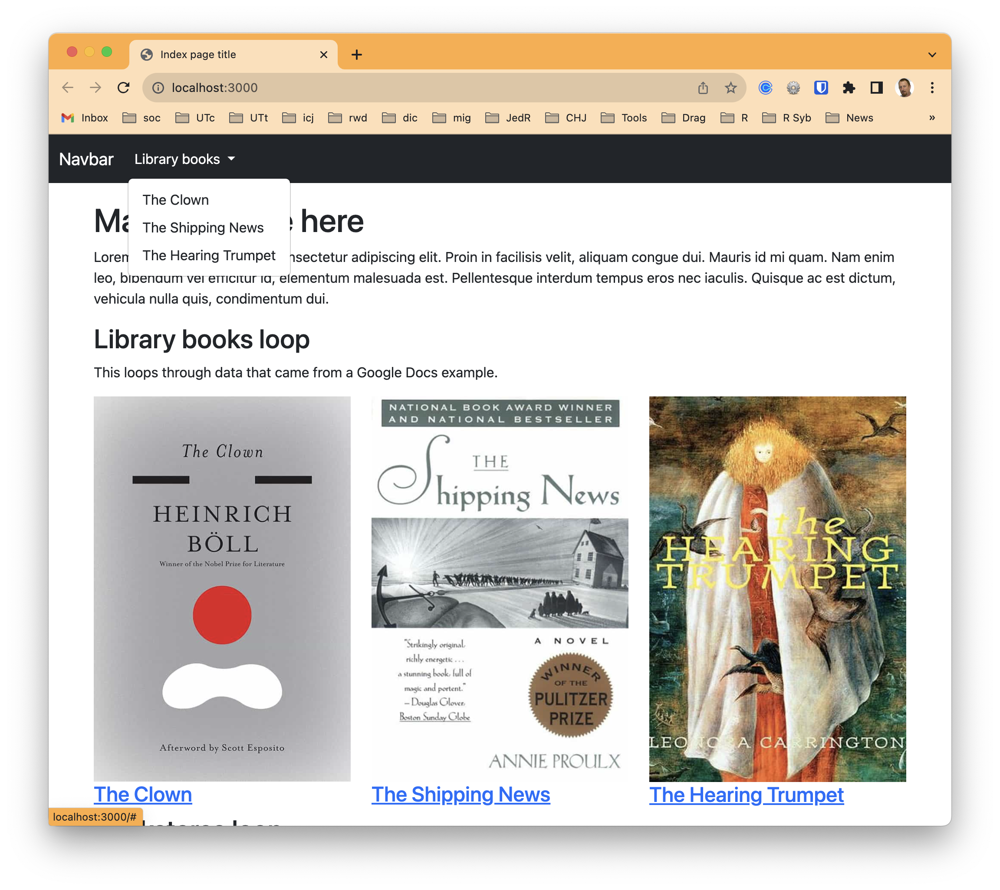
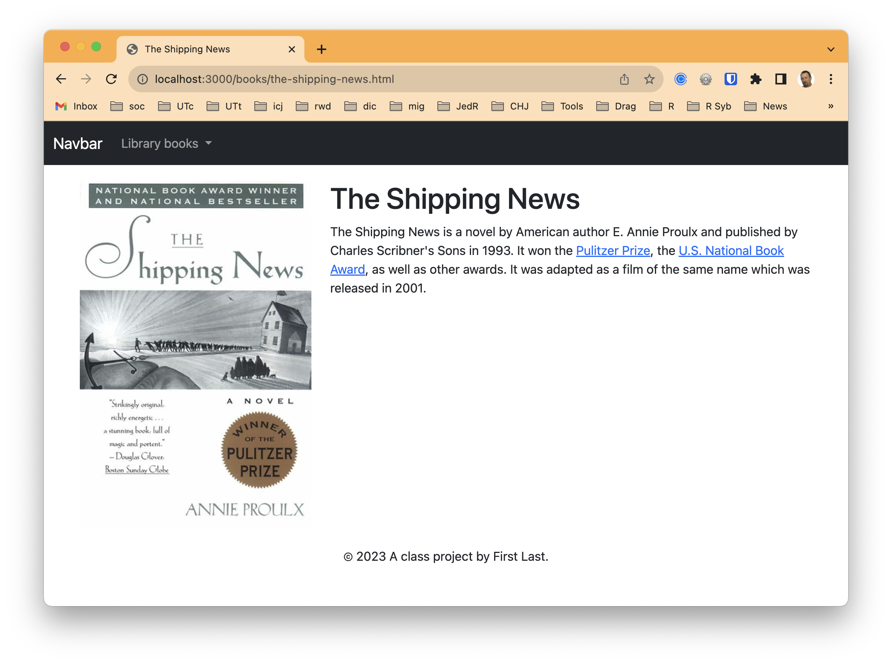

24 The static app framework
24.1 Goals for this lesson
We will learn the features of this project rig in steps:
- Templates
- We’ll learn about static-site generators and templates.
- We’ll build a new page using the base template.
- Loops and Google Sheets data
- We’ll learn about using Google Sheets to manage data in our project.
- We’ll introduce loops to process data on our pages.
- Google Docs, ArchieML and baking pages
- We’ll learn about using Google Docs/ArchieML for content.
- We’ll learn about the bake command in the project.
- We’ll create blog pages based on a Google Doc source.
- We’ll update our index page to build links to the blog pages.
24.2 Set up development
The best way to set up your project template is to use degit to download the template from the icj-project-rig repo.
- Create your project folder, called
yourname-staticapp. - Open VS Code into that folder and open the Terminal.
- Run
degit utdata/icj-project-rig. - Create your Github repo and connect them.
- run
npm installto install all the Node software - run
gulp devto process all the files and start the server.
24.3 Review the example site
Before we talk about how the project architecture is structured, let’s tour the example pages that are included. As we do so, we’ll just touch on how the example code applies to specific project features.


- All the pages on the site have a Bootstrap Navbar and a footer. Each page gets this from a single template, so we don’t have to duplicate code for each new page.
- The index also has a bookstores list down the page a bit, which is a loop over some data. As we explore the code later you’ll see there is only code for one entry, but we repeat that code for every row in data file. In this case the data was downloaded from a Google Sheets spreadsheet, an optional feature of the project. Sometimes having a structured data source like a spreadsheet is helpful.
- The index also has a listing of three books. This is also built within a “loop” that allows us to repeat the same code over and over. In this case our book data was downloaded from a Google Docs file written in a special structure called ArchieML, developed by The New York Times.
- Lastly, there are individual pages for each book listed, which serve as an example of detail pages built from the same template. Only the text and image content is different for each page, but the structure for each page comes from the same template.
- These specific book pages were created using another feature of the project where we can “bake” pages from data. Instead of a human creating a new file for each library book, they were generated automagically based on data from the Google Doc. If there were 100 books in the data, it would’ve built 100 pages.
Storing our content in Google Docs and Sheets might seem overcomplicated at at first, but it allows us to use Google as a content management system of sorts where many people can collaborate on the content and stay our of our code. It’s super powerful, and used by newsrooms like NYT, NPR and The Texas Tribune.
24.4 Understand the project structure
The README.md in the project template has details about how different features work. READ THE README. While the README file is in your project, you might find it easier to read the README online. We will also go over it in class (or through video).